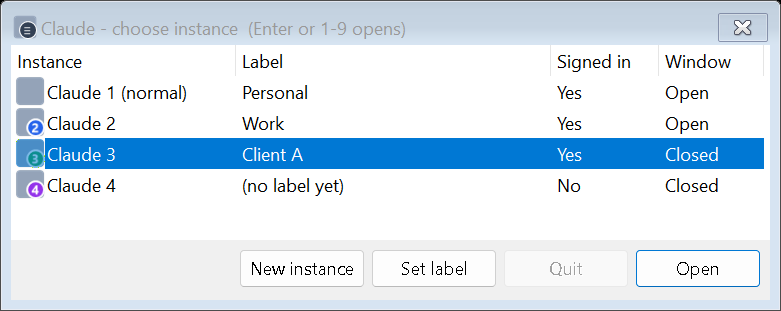

Run multiple Claude Desktop accounts side by side on Windows
A free PowerShell script that opens extra copies of Claude Desktop, each signed in to its own account. Each copy has its own settings and MCP servers, a numbered icon, a window title like “Claude 2 - Work”, and a place in a one-key picker.
Unofficial community tool, not made or endorsed by Anthropic · MIT licence · no admin rights, no installer · source on GitHub
Install
You need Windows 10 or 11 and Claude Desktop. Paste this into PowerShell (no admin needed):
$dir = "$env:USERPROFILE\ClaudeInstances"
$zip = "$env:TEMP\claude-desktop-multi-instance.zip"
Invoke-WebRequest -UseBasicParsing https://github.com/ahsanilya-s/claude-desktop-multi-instance/releases/latest/download/claude-desktop-multi-instance.zip -OutFile $zip
Expand-Archive $zip $dir -Force
Unblock-File "$dir\Open-ClaudeInstance.ps1"
powershell -NoProfile -ExecutionPolicy Bypass -File "$dir\Open-ClaudeInstance.ps1" -SetupExpected output: Desktop shortcuts ready: Claude 2, Claude - choose instance.
- Double-click Claude 2 on your desktop. A second Claude window opens.
- Sign in with your email address, and type the code from the email into the Claude 2 window. If the first button opens your browser, pick the email option instead; it may be under “Sign in another way”. Google and browser sign-in return to your normal Claude (known limitation).
- Open Claude - choose instance on your desktop to see all your instances.
To look first: download the zip from the latest release, check it against SHA256SUMS.txt, read the one script, then run the last line. To update, paste the same commands again. Your instances, labels and sign-ins are kept.
What you get
- Separate accounts side by side. Each instance is the real Claude Desktop with its own data folder: its own sign-in, settings and MCP servers.
- Easy to tell apart. Numbered shortcut icons, optional labels such as “Work”, and window titles that show in Alt+Tab and taskbar previews.
- A quick picker. Press 1-9 to open an instance, and see which are signed in and open.
- A real Quit. The X only hides Claude in the tray. Quit closes an extra instance properly and frees its memory.
- Your normal Claude stays as it is. The tool never changes or quits it.

Who it is for: anyone with a work account and a personal account, such as an employer's Team or Enterprise seat plus a personal plan, and consultants or developers who keep a separate Claude setup per client. Claude Desktop runs one account per Windows user. Anthropic's help center describes switching between accounts with different emails as logging out and back in.
Everyday use
| To | Do this |
|---|---|
| Open Claude 2 | Double-click Claude 2 on the desktop |
| See all instances | Double-click Claude - choose instance, then press the instance's number (Enter opens the selected row, Esc closes) |
| Add Claude 3, 4, … | Picker → New instance |
| Name an instance | Picker → Set label. The shortcut and window title change within seconds |
| Close an instance completely | Picker → select it → Quit |
| Open your normal Claude | From the Start menu as usual, or picker → Claude 1 |
Command line
Run powershell -NoProfile -ExecutionPolicy Bypass -File "$env:USERPROFILE\ClaudeInstances\Open-ClaudeInstance.ps1" with one of these options:
| Options | What it does |
|---|---|
(none) or -Name Instance2 | Opens Claude 2, and creates it on first use |
-Name Instance3 | Opens Claude 3. Any name of letters, digits and dashes works |
-Name Instance2 -Label Work | Sets the label without opening it |
-Name Instance2 -Quit | Quits Claude 2 properly. Never touches your normal Claude |
-Picker · -List | Shows the picker · prints every instance with its state and data folder |
-Setup · -Version | Rebuilds icons and shortcuts · prints the version |
How it works
Claude Desktop is an Electron app. Electron and Chromium accept a --user-data-dir switch, and the app's “only one copy” lock belongs to that data folder, so a copy started with another folder runs alongside your normal Claude. The script:
- Finds the installed Claude Desktop: the MSIX version from claude.ai or the Microsoft Store, or the older per-user installer.
- Starts it with
--user-data-dir="%APPDATA%\Claude-<Name>". - Starts a helper of about 2 MB, compiled on your PC from source in the script. The helper keeps the window title and exits with that instance.
The script makes no network requests and needs no admin rights. SECURITY.md lists exactly what it reads and writes.
Tested setups
| Setup | Status |
|---|---|
| Windows 11 Pro 64-bit (build 26300), Claude Desktop 4.23118.0 (MSIX from claude.ai), Windows PowerShell 5.1 | Tested by hand in November 2026: open, sign-in with an email code, labels, titles, picker, Quit |
| Windows Server 2022 and 2025 on GitHub Actions | Automated tests on every change |
| Windows 10 · Windows on Arm · the older Claude installer | Not tested yet. Reports are welcome |
PowerShell 7 (pwsh) | Not supported. Use Windows PowerShell; the shortcuts already do |
| macOS, Linux | Not supported. See the alternatives below |
Limitations
- It is unofficial. A Claude Desktop update can change how the app starts. One 2026 Store build ignored
--user-data-dir(#103068); the current version works again. - Sign-in in extra instances needs an email code. Google and browser sign-in finish in your normal Claude (#98549).
- Self-updates can restart an instance as your normal profile (#104138). Close it and reopen it from its shortcut.
- Memory. Each open instance is a full Claude Desktop, around 1 GB on the maintainer's PC. Quit the ones you are not using.
- Use it for accounts that are yours. Anthropic's Consumer Terms forbid sharing accounts. Its Usage Policy forbids using extra accounts to evade bans or detection.
More answers: FAQ and troubleshooting.
Alternatives
Other community projects, listed for convenience and not reviewed:
- Windows: claude-desktop-clone, ai-multi-instance, ClaudeSwitch, claude-desktop-profiles
- macOS: claude-multiprofile, claude-fix
- Without a tool: a separate Windows user account per Claude account, or claude.ai in a separate browser profile.
Contribute and get help
Issues · Discussions · Contributing guide · Security policy · Releases